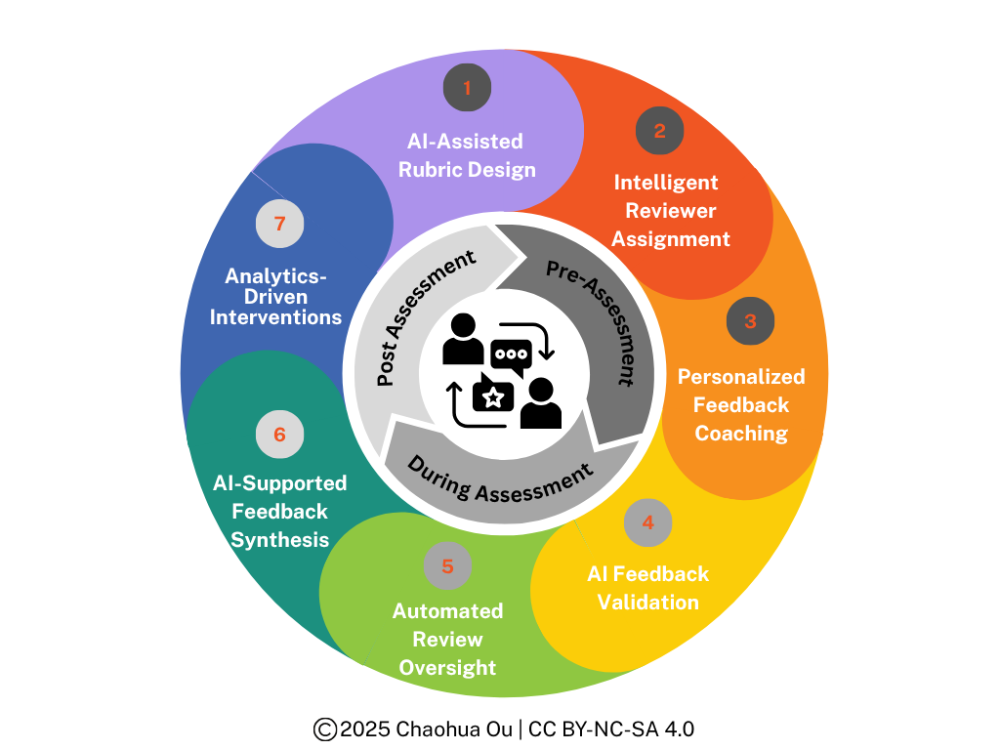

Designing AI-Augmented Peer Assessment
Discussion boards scale, but participation is uneven. A five-year study of 1,451 students compared peer assessment with online discussion, and the results point to a design where AI supports every stage of peer review.
Read the post →